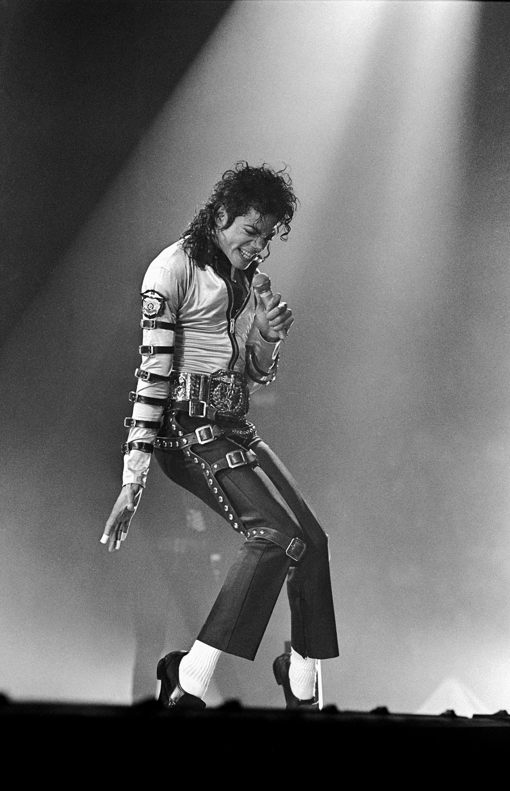
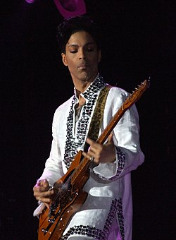
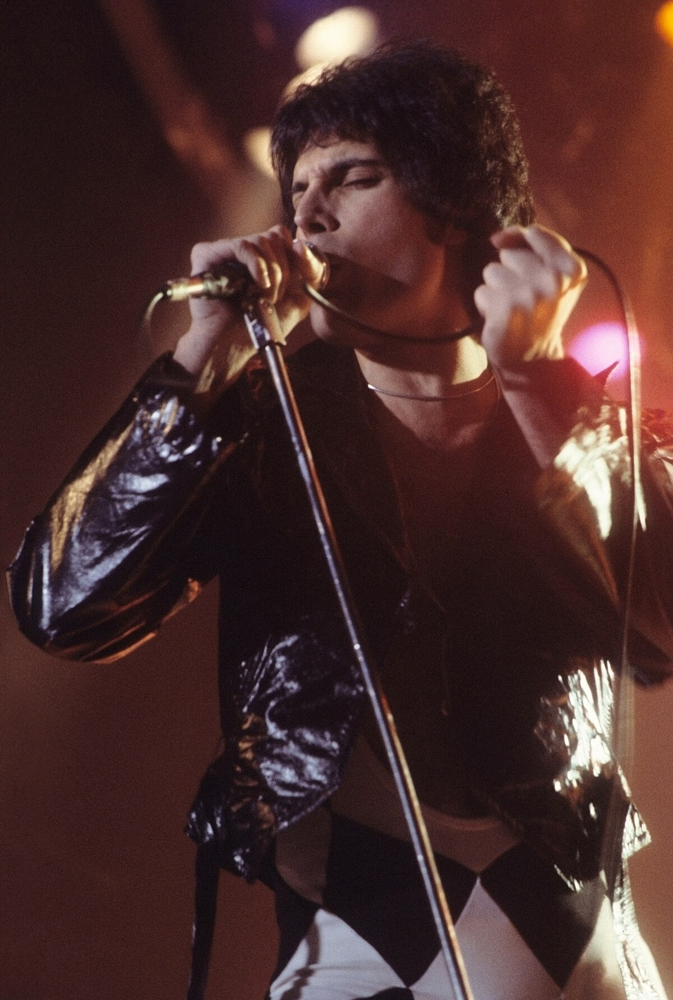
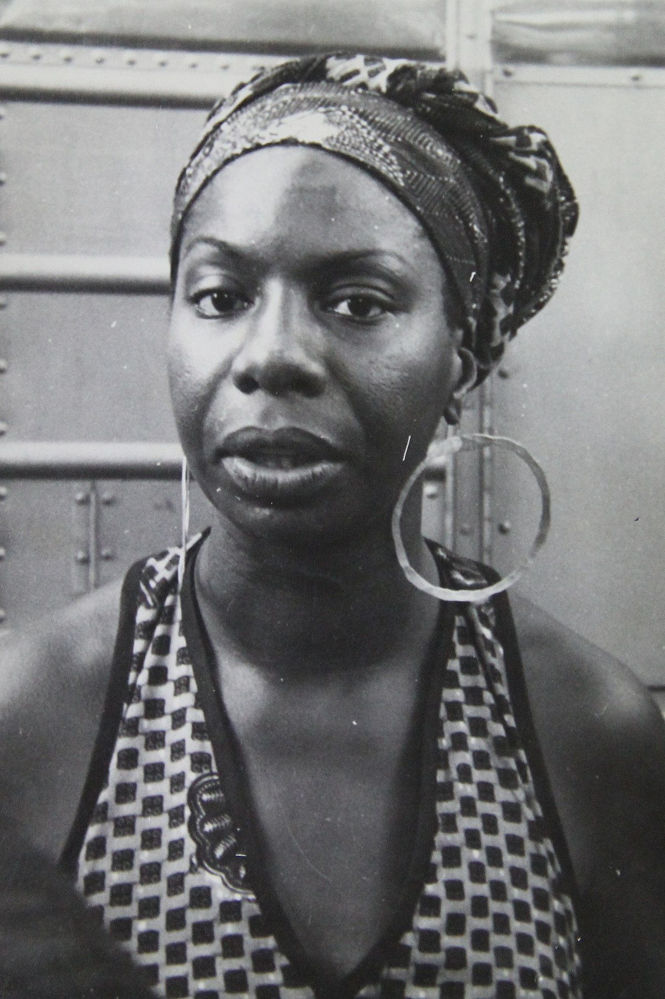
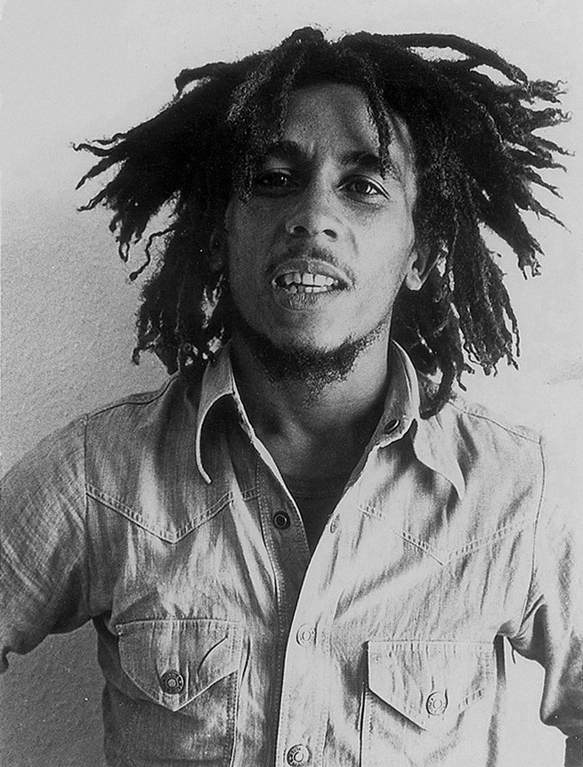

📀 Nasleđe i Uticaj
- 
Michael Jackson:
Michael Jackson nije samo kralj popa – on je simbol globalne pop kulture. Njegova sposobnost da spoji muziku, ples, vizuelne efekte i društvenu poruku učinila ga je najvećim izvođačem moderne ere. Još kao dete u Jackson 5, pokazivao je neverovatan talenat, ali je tek solo karijerom zasijao punim sjajem. Albumi poput „Thriller“, „Bad“ i „Dangerous“ nisu samo muzički rekordi – oni su kulturni događaji. Njegovi plesni pokreti, naročito „moonwalk“, postali su simboli čitave epohe. Spotovi su mu bili kao mini filmovi, otvarajući vrata MTV generaciji. Pored slave, nosio je i težinu neprihvatanja, medijskog pritiska i unutrašnje borbe – što se često ogledalo u njegovim emotivnim pesmama. Ipak, njegova ostavština ostaje neizbrisiva: muzika koja spaja sve nacije, generacije i jezike.
- 
Prince: Kako je menjao muzičku industriju sopstvenim pravilima – ne samo da je bio muzički genije, već je postao simbol borbe za prava umetnika, zalažući se za kreativnu slobodu i kontrolu nad sopstvenim delom. Njegov rad je inspirisao brojne muzičare da razmišljaju van okvira i da se izbore za nezavisnost.
Prince nije bio samo izvođač – on je bio revolucija. Njegov talenat obuhvatao je sviranje više od 20 instrumenata, komponovanje, produkciju i nastupanje sa neponovljivom energijom. Bio je pionir u spajanju različitih žanrova – od funka, rocka, R&B-a do popa i elektronike. Međutim, ono po čemu je ostavio neizbrisiv trag jeste njegova borba za umetničku slobodu. Kada se sukobio sa izdavačkom kućom Warner Bros zbog vlasništva nad sopstvenom muzikom, promenio je ime u simbol (tzv. „Love Symbol“) i postao simbol otpora protiv muzičke industrije. Prince je pokazao da umetnik ne mora da se pokori komercijalnim pravilima da bi ostao legenda – dovoljno je biti hrabar, dosledan i autentičan.
- 
Queen: Kombinacija roka, opere i večnih himni koje žive i danas. Njihov legendarni koncert na Live Aidu, neponovljiva harizma Freddieja Mercuryja i neustrašiva kreativnost u pisanju pesama ostavili su trajni trag u muzici i popularnoj kulturi širom sveta.
Queen je bend koji je redefinisao granice popularne muzike. Sa harizmatičnim i scenski neponovljivim Freddiejem Mercuryjem, Queen je postao simbol umetničke slobode, tehničke virtuoznosti i žanrovskog eksperimenta. Njihova pesma „Bohemian Rhapsody“ bila je šok za radio stanice, ali je postala jedna od najvoljenijih pesama svih vremena. Kroz albume poput „A Night at the Opera“, „News of the World“ i „The Game“, Queen je pokazao kako bend može evoluirati i ostati relevantan u svakoj deceniji. Njihov nastup na Live Aidu 1985. godine i danas se smatra jednim od najboljih koncertnih momenata u istoriji muzike – demonstracija moći muzike da poveže milione ljudi u istom ritmu.
- 
Nina Simone: Glas građanskih prava u ritmu džeza i bluza – njena muzika nije bila samo umetnost, već i alat za borbu protiv nepravde. Njen izražajan glas i hrabre poruke u pesmama čine je ključnom figurom u muzičkom i društvenom pokretu 20. veka.
Nina Simone bila je više od pevačice – bila je glas onih koji nisu imali glas. Kroz pesme poput „Mississippi Goddam“, „To Be Young, Gifted and Black“ i „I Wish I Knew How It Would Feel to Be Free“, Simone je spojila umetnost i aktivizam. Njen stil nije bio lako klasifikovati – jazz, soul, blues, folk i klasična muzika prožimali su se u njenom izražaju. Bila je izuzetna pijanistkinja sa klasičnim obrazovanjem, što se osetilo u njenim sofisticiranim aranžmanima. Njena muzika bila je istovremeno nežna i beskompromisna, ranjiva i snažna – prava refleksija njenog karaktera. Nina Simone je i danas inspiracija umetnicima koji žele da koriste muziku kao sredstvo borbe, promene i nade.

David Bowie: Ikona stalnih transformacija i muzičkih eksperimenata. Njegova sposobnost da stalno menja muzički izraz i vizuelni identitet pokazuje kako umetnik može ostati relevantan i inovativan tokom decenija, inspirišući generacije kreativaca.
David Bowie je bio umetnik koji je srušio sve granice – žanrovske, vizuelne, kulturne i identitetske. Njegove muzičke faze, od glam rocka sa Ziggy Stardustom, preko soul perioda („Young Americans“), do industrijskog i elektronskog eksperimentisanja u Berlinu, pokazale su neprestanu žeđ za kreativnim istraživanjem. Bowie je bio prvi veliki pop umetnik koji je identitet tretirao kao fluidan koncept. Njegova hrabrost da se menja i bude drugačiji inspirisala je generacije koje se bore sa pripadanjem, rodnim normama i očekivanjima društva. Pored muzike, njegov rad u filmu („Labyrinth“, „The Man Who Fell to Earth“) i modu učinio ga je multimedijalnim fenomenom. Do poslednjeg daha, sa albumom „Blackstar“, Bowie je ostao umetnik koji nas uči da se ne bojimo promena – već da u njima pronađemo slobodu.
- 
Bob Marley: Reggae koji je postao glas za slobodu i promene – njegove pesme su podstakle borbu za pravdu, ljubav i mir. Marley je uspeo da lokalni žanr Jamajke pretvori u univerzalnu poruku koja je obuhvatila ceo svet i ostala živa do danas.
Bob Marley je učinio ono što je retko kome pošlo za rukom – pretvorio lokalni žanr (reggae) u globalni jezik nade. Njegove pesme nisu bile samo ritmične i melodične, već duboko političke, spiritualne i društveno angažovane. Kao lider benda The Wailers, stvorio je himne kao što su „One Love“, „No Woman, No Cry“, „Redemption Song“ i „Get Up, Stand Up“ – koje i danas pokreću mase i inspirišu borbu za jednakost i pravdu. Bob je verovao u moć muzike da izleči, probudi i ujedini. Njegova Rastafari vera oblikovala je njegov pogled na svet, dok je njegov život bio ispunjen mirovnim misijama, otporom nepravdi i ljubavlju prema ljudima. Njegove reči – „Emancipate yourselves from mental slavery“ – ostaju večni poziv da se oslobodimo lanaca straha i budemo ono što jesmo.